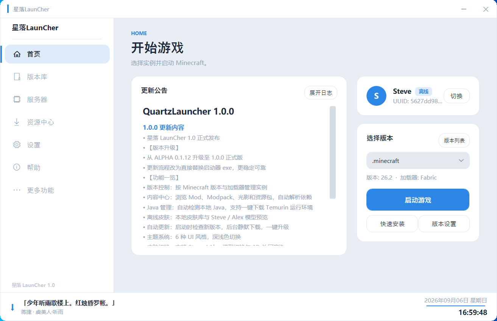
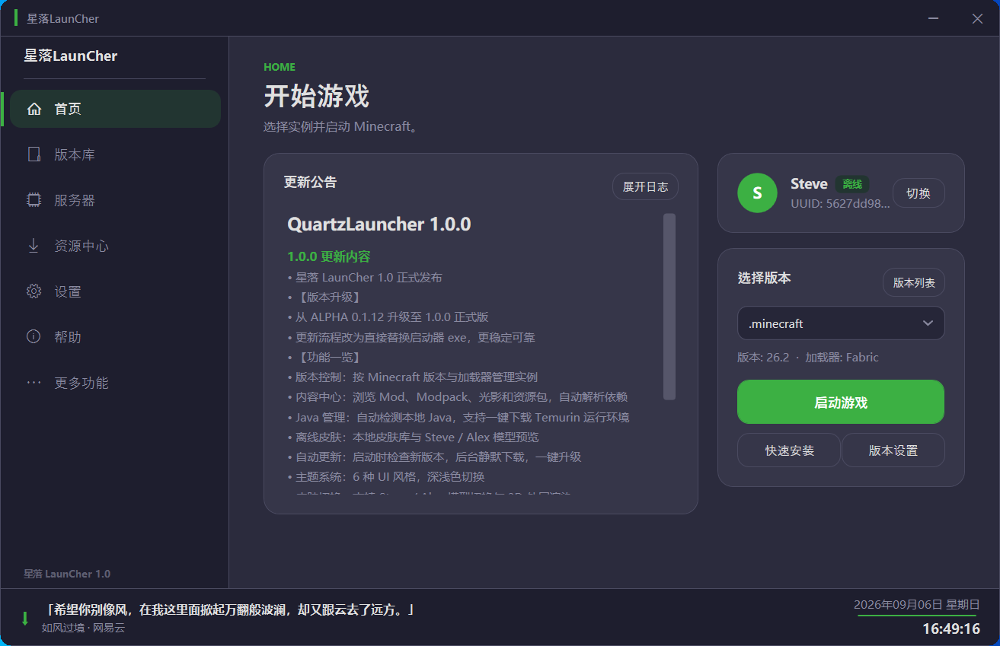
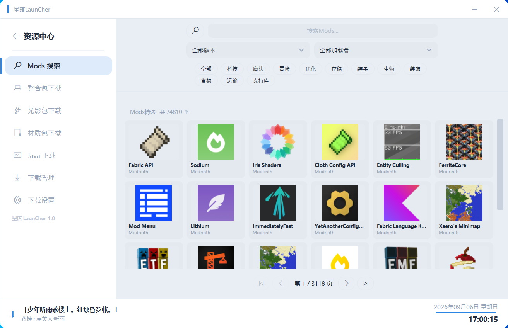
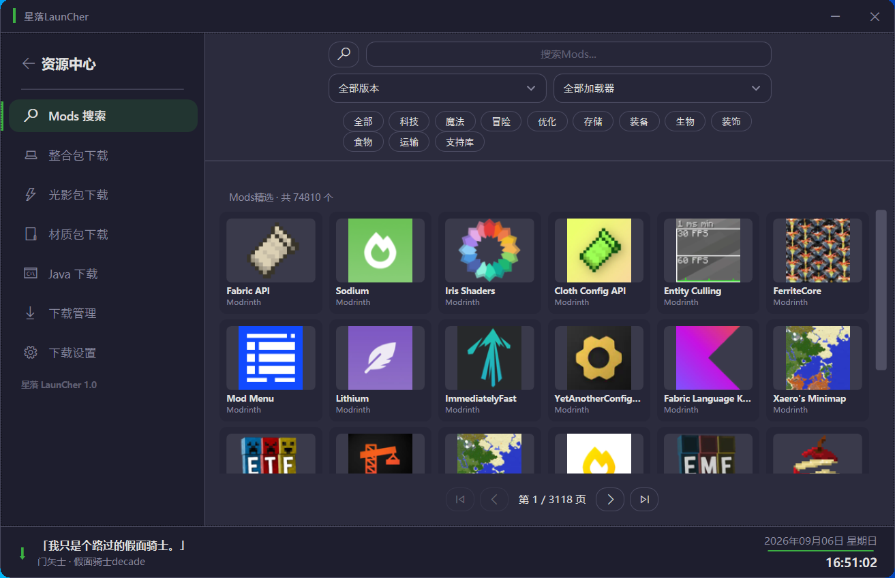
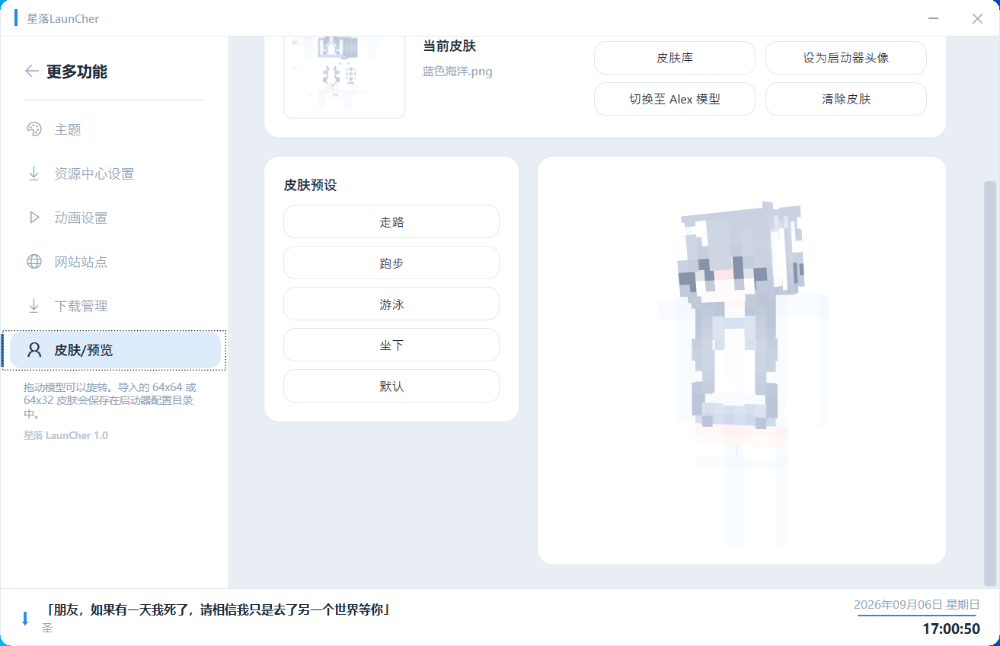
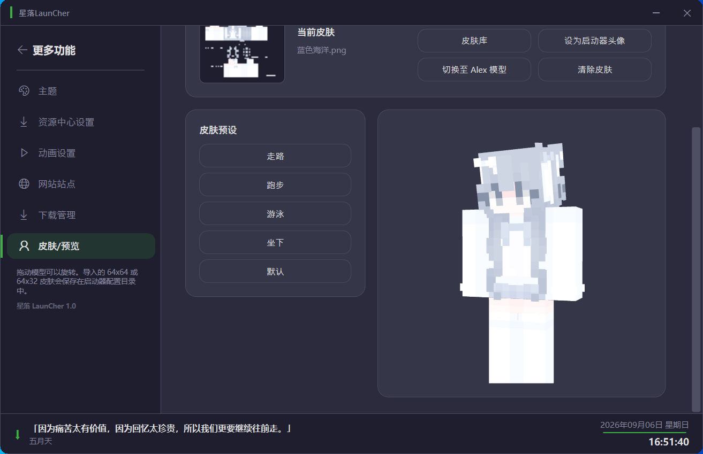
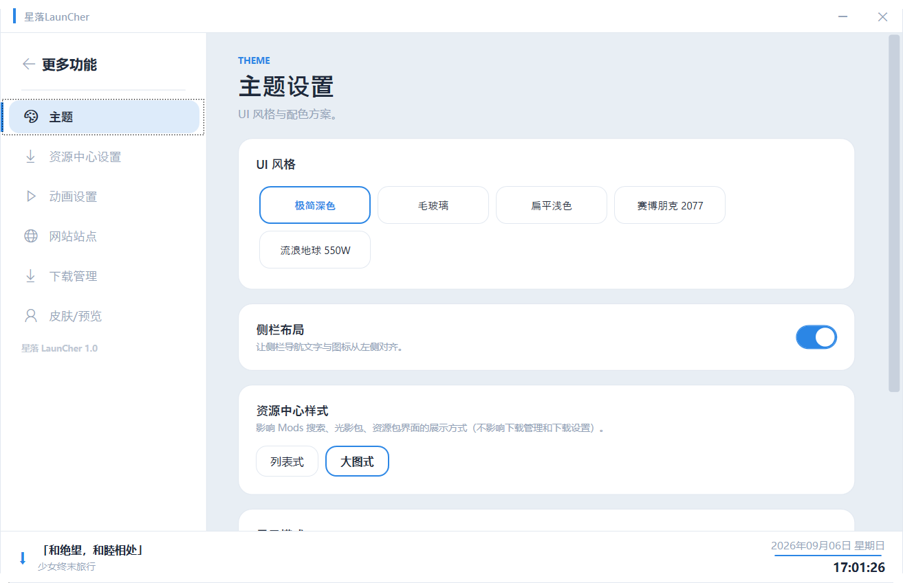
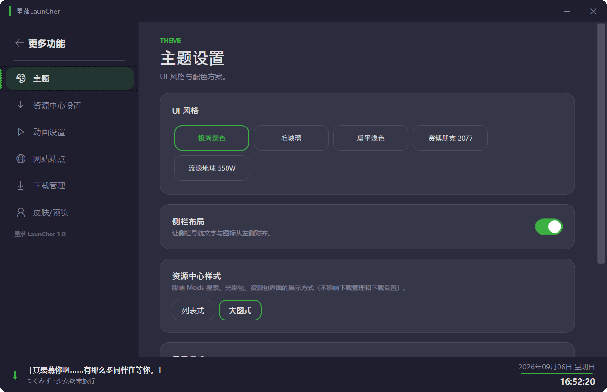

版本控制
按 Minecraft 版本与加载器管理实例，启动路径清楚可见支持 Forge、Fabric、Quilt 等主流加载器
01 STARFALL / LAUNCHER
面向 Minecraft 的轻量启动与内容管理工具版本、Java、Mod、皮肤和资源，一个控制台搞定
02 SYSTEM CAPABILITIES
按 Minecraft 版本与加载器管理实例，启动路径清楚可见支持 Forge、Fabric、Quilt 等主流加载器
浏览 Mod、Modpack、光影和资源包，自动解析并下载必要依赖，无需手动寻找
自动检测本地 Java 安装，支持一键下载 Temurin 运行环境，版本匹配不再手动折腾
离线模式支持本地皮肤库、Steve / Alex 模型切换与 3D 外层渲染预览
启动时自动检查新版本，后台静默下载，一键替换完成升级，不打断游戏节奏
集成 CurseForge 与 Modrinth 资源搜索，下载速度稳定，支持多线程分段传输
03 INSTALLATION GUIDE
点击页面顶部的「下载 Windows 版」按钮，保存 QuartzLauncher-1.0.1.exe 到任意位置
选择 Minecraft 版本和加载器，点击启动启动器会自动下载游戏文件、补丁和资源
04 PREVIEW








05 FAQ
06 CONTACT & FEEDBACK
加入交流群获取即时支持与更新通知
1124014660
反馈 Bug 或提交建议
2840109628@qq.com
加后请备注来意
ARM9008CE